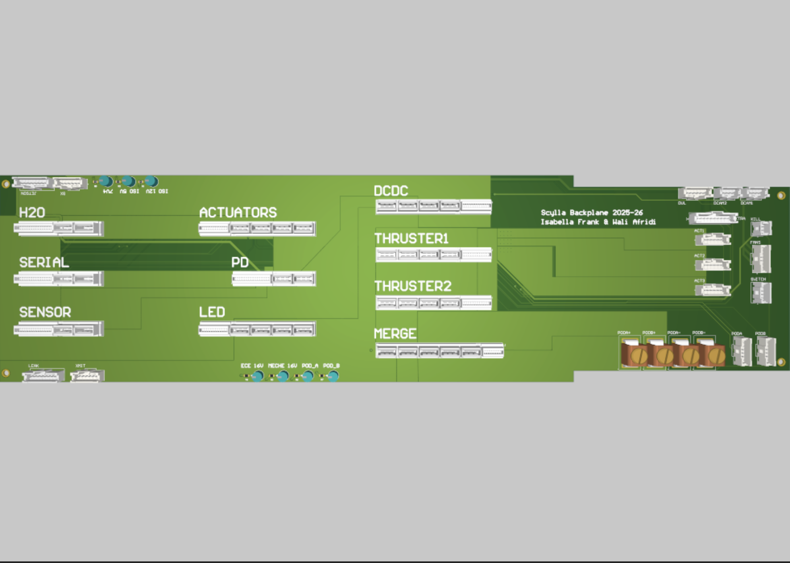

C2S2: 2.4GHz OOK Power Amplifier on TSMC180
Project Description
Whilst being subteam lead, I also co-designed the backplane board for the CUAUV submarine. The backplane PCB provides card-edge connectors for all the other PCBs that are designed by CUAUV to connect to. The board takes in power from two 16.8V LiPo Batteries and can facilitate the delivery of up to 80 Amps between boards to power all of the thrusters, servos, and electronics in the submarine. It also provides routing for 16 Rx/Tx pairs for RS232 communication between individual boards or peripheral devices and the Serial board, which communicates to the submarine's Nvidia Jetson.